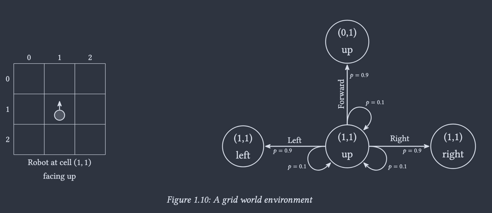

O estado volta ao problema
No bandit a ação não mudava nada. Aqui ela muda — e a consequência demora. Vamos montar a formalização em três camadas encaixadas, como uma boneca matryoshka: processo de Markov, processo de recompensa, processo de decisão.
Três camadas encaixadas
Cada uma acrescenta exatamente um ingrediente à anteriorSeguindo Lapan (2024), o processo de decisão de Markov não é uma definição que se engole inteira: ele é a última de três bonecas, uma dentro da outra.
Só estados que transitam segundo uma lei probabilística. Você observa, não interfere.
𝒮, 𝑻Cada transição passa a valer um escalar. Aparecem retorno, desconto e valor.
𝒮, 𝑻, 𝑹, γO agente escolhe uma ação que altera as probabilidades de transição. Aparece a política.
𝒮, 𝒜, 𝑻, 𝑹, γO bandit da aula 02 é o caso degenerado: um estado, recompensa imediata, nenhuma transição. Tudo o que vamos ganhar aqui é a consequência atrasada — e o preço dela é a equação de Bellman.
O que muda em relação ao bandit
| Bandit (aula 02) | MDP (esta aula) | |
|---|---|---|
| Estados | um só | 𝒮, e a ação move o sistema dentro dele |
| Efeito da ação | nenhum sobre o futuro | muda a distribuição do próximo estado |
| Recompensa | imediata | imediata + tudo o que ela viabiliza depois |
| Objeto estimado | q(a) | vπ(s) e qπ(s,a) |
| Dificuldade nova | — | atribuição de crédito no tempo |
O MDP é o contrato que todos os algoritmos das próximas aulas assumem — Monte Carlo, diferenças temporais, Q-learning, DQN. Sem ele, nenhum deles tem por que funcionar.
Um sistema que só dá para observar
Estados discretos, uma lei de transição desconhecida- O que se observa são estados s ∈ 𝒮 — um conjunto discreto e finito.
- O sistema transita de um estado ao outro segundo uma lei dinâmica que, em geral, você não conhece.
- A observação forma uma sequência de estados — uma cadeia. Daí cadeias de Markov.
- Não há agente, não há ação, não há recompensa. Ainda.
A probabilidade do próximo estado condicionada a toda a história:
Escrita assim ela é inútil: o condicionante cresce com o tempo e nunca se estabiliza. Precisamos de um corte.
A premissa de Markov
O último estado carrega informação suficiente sobre a dinâmica para prever o próximo. Toda a história anterior é redundante.
Dá para forçá-la expandindo o espaço de estados: coloque no estado os atrasos, as velocidades, os últimos k quadros. Funciona — ao custo de |𝒮| explodir. Essa troca reaparece o curso inteiro.
Markov implica estacionariedade
Non-stationarity means that there is some hidden factor that influences our system dynamics, and this factor is not included in observations. However, this contradicts the Markov property, which requires the underlying probability distribution to be the same for the same state regardless of the transition history.
Lapan, M. (2024)
O bandit não estacionário do § 06 da aula passada viola a premissa de Markov sobre o estado observado: existe um fator escondido — o passeio aleatório de q(a) — que não está no estado. Por isso precisamos do passo constante α lá, e por isso aqui vamos supor 𝑻 fixa.
Toda probabilidade é ≥ 0; a probabilidade do espaço amostral inteiro é 1; e a probabilidade da união de eventos disjuntos é a soma das probabilidades. Toda linha de uma matriz de transição precisa respeitar isso — é o que a demonstração da próxima seção verifica em tempo real.
A dinâmica cabe numa matriz
|𝒮| × |𝒮| números, e o processo inteiro está descritoSe uma cadeia de Markov tiver k estados possíveis, então a probabilidade de o sistema estar no estado i em qualquer observação se na observação imediatamente precedente estava no estado j é denotada por pij e é denominada probabilidade de transição. A matriz P = [pij] é a matriz de transição.
Howard Anton, Álgebra Linear com Aplicações
Anton: pij = de j (coluna) para i (linha); as colunas somam 1.
Lapan: 𝑻ij = de i (linha) para j (coluna); as linhas somam 1.
Daqui em diante usamos só a convenção de Lapan. Linha = origem.
Toy example: três lojas de aluguel de carros
Dos dados históricos de locação e devolução saiu uma proposta de dinâmica: dado que um carro saiu da loja i, com que probabilidade ele é devolvido na loja j?
| → loja 1 | → loja 2 | → loja 3 |
|---|
Como fica a distribuição na 3ª iteração? E na 10ª? E na 100ª? Existe uma “manha” para chegar direto ao valor final?
A distribuição de equilíbrio x* satisfaz 𝑻⊤x* = x* — ou seja, é o autovetor de 𝑻⊤ associado ao autovalor 1, normalizado para somar 1. Iterar é só a versão numérica (método das potências) do mesmo cálculo.
x* ≈ (0,557 0,230 0,213)
Repare que a partir de n ≈ 10 os números praticamente não se movem mais: a cadeia esquece onde começou. Essa perda de memória é o que torna o valor de um estado bem definido.
Um exemplo com cara de gente
Quatro estados observáveis de um trabalhador de escritório
- 1 · Home — não está no escritório.
- 2 · Coffee — tomando café no escritório.
- 3 · Chat — conversando com colegas.
- 4 · Computer — trabalhando no computador.
Só temos observações, sequências de estados capturadas ao longo de vários dias:
Computer → Computer → Chat → Chat → Coffee → Computer → Computer → Computer
Home → Home → Coffee → Chat → Computer → Coffee → Coffee
…
Conte todas as transições que saem de cada estado, normalize para que a linha some 1. Nenhum outro ingrediente. É a mesma média amostral da aula 02, agora sobre transições em vez de recompensas.
Passeando pela cadeia
A matriz estimada com muitas observações fica assim — e o passeio abaixo é gerado a partir dela. Quanto mais passos, mais a frequência visitada se aproxima da distribuição estacionária.
No grafo em Mermaid das notas, Computer → Chat aparece com p = 0,2; na matriz, com 0,1. A linha só soma 1 com 0,1, então é esse o valor usado aqui.
Segunda boneca: a transição passa a valer alguma coisa
Uma segunda matriz, do mesmo tamanho da primeiraJá havia número na aresta — mas ele modelava a dinâmica. A recompensa é um escalar independente: pode ser positiva, negativa, grande ou pequena. São dois papéis diferentes na mesma aresta.
A forma mais geral: uma matriz 𝑹 de dimensões |𝒮| × |𝒮|, em que 𝑹ij é a recompensa recebida ao transitar de i para j.
| → Home | → Coffee | → Chat | → Computer | |
|---|---|---|---|---|
| Home | +1 | +1 | · | · |
| Coffee | · | +1 | +2 | +3 |
| Chat | · | +1 | −1 | +2 |
| Computer | +2 | +1 | −3 | +5 |
O “·” marca transições de probabilidade nula: a recompensa ali nunca é coletada, então o valor é irrelevante. Trabalhar duro paga +5; ser interrompido no meio do trabalho custa −3; conversa longa entedia (−1).
Retorno: a soma descontada do que ainda vem
Visão de um passo só: Gt = Rt+1. Agente guloso e míope — não enxerga nada do que a transição viabiliza.
Horizonte prático: a soma converge mesmo em cadeia infinita, e existe uma meia-vida clara de atenção.
Só faz sentido em episódios finitos. Sem estado sumidouro, todo estado desta cadeia vale infinito.
💡 Na prática, γ costuma ficar entre 0,9 e 0,99 — o que corresponde a olhar de 10 a 100 passos à frente.
De retorno a valor
Uma esperança matemática transforma amostra em número fixoCada episódio observado dá um Gt diferente para o mesmo estado — a cadeia é estocástica. O que é estável é a média desses retornos:
Lá, q(a) = 𝔼[Rt | At = a] era a média de uma recompensa. Aqui a média é de uma soma descontada infinita. Todo o resto do curso é sobre como estimar essa média sem enumerar o infinito.
Para uma cadeia de Markov com recompensa, o valor satisfaz um sistema linear — uma recorrência que já é a equação de Bellman, ainda sem ações:
Quanto vale cada estado do escritório
Com γ = 0, qual é o estado mais valorizado? E o que acontece com a ordem dos quatro estados quando γ cresce?
Com γ = 0, v(s) é só a média das recompensas imediatas ponderada pelas probabilidades da linha:
Home 1,0 · Coffee 2,1 · Chat 0,3 · Computer 2,8
Ganha Computer. E a ordem não muda com γ: em toda a faixa, Computer > Coffee > Home > Chat. O que muda são as distâncias — arraste o γ e acompanhe:
γ = 0 → 0,30 · 2,80 γ = 0,9 → 13,89 · 16,99
Com γ = 0, Chat vale nove vezes menos que Computer; com γ = 0,9, apenas 18% menos; com γ = 0,98, 4% menos. A razão é que a cadeia mistura: de qualquer estado o sistema acaba caindo na mesma distribuição estacionária, e quanto maior o horizonte, menos importa onde você começou. O valor de um estado é, cada vez mais, só uma vantagem transitória sobre os outros.
Terceira boneca: o agente escolhe
A matriz ganha uma dimensão e vira um cubóideCom um conjunto de ações 𝒜, a transição deixa de ser uma matriz: passa a haver uma matriz por ação.
O agente não escolhe o próximo estado. Ele escolhe qual distribuição de próximo estado será sorteada. É uma diferença que atravessa todo o curso.
Porque o mundo escorrega: rodas patinam, sensores erram, o atuador satura. Modelar a ação como uma distribuição é o que torna o MDP útil fora do papel.
O robô que escorrega
If the robot tries to move forward, there is a 90% chance that it will end up in the state (0, 1), up, but there is a 10% probability that the wheels will slip and the target position will remain (1, 1), up.
Lapan, M. (2024), sobre a Figura 1.10

A história inteira condensada no par (s, a) mais recente. Essa função p(s′,r|s,a) é a dinâmica do MDP na notação do Sutton & Barto, e ela reúne 𝑻 e 𝑹 num objeto só.
Política: o comportamento do agente
O objeto que vamos otimizar do resto do curso inteiroThe simple definition of policy is that it is some set of rules that defines the agent's behavior.
Lapan, M. (2024)
Uma ação recebe probabilidade 1. É o caso de uma política gulosa sobre valores.
Massa espalhada entre ações. É o que ε-guloso e softmax produzem — exploração embutida na própria política.
Porque toda política determinística é um caso particular, e porque a versão probabilística é diferenciável — a base dos métodos de gradiente.
Fixe π num MDP e a ação desaparece: sobra uma MRP, com 𝑻π(s,s′) = ∑a π(a|s) 𝑻(s,s′,a). É exatamente a boneca do § 06 de volta — e é por isso que avaliar uma política é resolver um sistema linear.
As duas funções de valor, agora indexadas por π
Dizer “o valor do estado s” sem dizer sob qual política. Um mesmo estado pode valer muito sob uma política e quase nada sob outra — a demo do § 09 mostra as duas lado a lado no mesmo mundo.
vπ(s) = ∑a π(a|s) qπ(s,a) — o valor do estado é a média dos valores das ações, ponderada pela política.
E, no outro sentido, qπ(s,a) = ∑s′ p(s′|s,a) [r + γvπ(s′)]. Guardar q custa |𝒮|·|𝒜| números em vez de |𝒮| — e, em troca, dispensa o modelo na hora de agir.
A relação recursiva que sustenta tudo
O valor de um estado, escrito em função dos valores dos vizinhosA fundamental property of value functions used throughout reinforcement learning and dynamic programming is that they satisfy particular recursive relationships.
Sutton & Barto (2018)
Leia da esquerda para a direita, como três decisões encadeadas:
- o agente sorteia uma ação segundo π — média sobre 𝒜;
- o ambiente sorteia a chegada segundo p — média sobre 𝒮;
- recolhe-se r e soma-se o valor descontado de onde se chegou.
O alvo deixou de ser um número observado e virou r + γv(s′): metade dado, metade estimativa própria. Esse truque tem nome — bootstrapping — e é o assunto das aulas 04 e 05.
Bellman virando algoritmo
Transforme a igualdade em atribuição e você tem um algoritmo. Duas versões, que diferem só em uma linha:
A única diferença é a média sob π virar um máximo. É a fronteira entre predição (quanto vale este comportamento?) e controle (qual é o melhor comportamento?).
Bellman rodando, varredura a varredura
| ação em (2, 0) | q(s,a) |
|---|
O valor propaga a partir dos terminais, uma célula por varredura. É literalmente a informação viajando para trás no tempo.
Três experimentos que vale fazer na demo
Deixe γ = 0,99 e leve a recompensa por passo de −0,04 a −1. O que acontece com a política perto do buraco?
Com passo barato (−0,04) a linha de baixo é ↑ ← ↑ ←: o agente foge do
buraco e ainda dá a volta pela esquerda. Com passo −1 ela vira
→ → ↑ ↑ — a pressa domina, o agente corta pela direita e, em (2,3),
a seta passa a apontar para dentro do −1. Continuar vivo custa mais
do que perder: com −1 por passo, o terminal ruim vira uma saída barata.
Zere o ruído do atuador e depois leve a 0,6. Compare as setas da linha de baixo.
Sem ruído o mundo vira busca em grafo: de (2,1) a seta aponta →, o
caminho mais curto, porque não há como derrapar. Com ruído 0,2 essa mesma seta vira
← — vale a pena dar a volta em vez de passar por baixo do buraco.
Com ruído 0,6 aparece algo mais estranho: em (2,3) a política escolhe
↓, e em (2,1), ↑. As duas apontam para uma
parede. O agente está deliberadamente batendo na borda para
ficar parado: qualquer movimento tem chance grande demais de
terminar em −1. Bater na parede virou a ação mais segura.
Compare as duas abas com os mesmos parâmetros: avaliação da política aleatória e iteração de valor.
Com γ = 0,95, ruído 0,2 e passo −0,04, a iteração de valor deixa todos os estados positivos (v(2,0) = 0,531); a avaliação da política aleatória deixa quase todos negativos (v(2,0) = −0,657), e só (0,2), colado no +1, escapa com 0,019.
Mesmo mundo, mesmos estados, mesma dinâmica: o que mudou foi o π do índice. É a demonstração concreta de que não existe “o valor do estado” — só vπ(s).
Repare também no custo: a avaliação da política aleatória precisa de umas 5 vezes mais varreduras para convergir, porque nenhuma ação puxa o valor com força.
O que fica
Cinco objetos e uma equação| Objeto | É | Aparece quando |
|---|---|---|
| 𝒮, 𝑻 | estados e a lei de transição | processo de Markov |
| 𝑹, γ | escalar por transição e desconto | processo de recompensa |
| 𝒜 | ações que reescolhem a distribuição | processo de decisão |
| π(a|s) | o comportamento do agente | é o que se otimiza |
| vπ, qπ | retorno esperado | é o que se estima |
O valor de um estado é a recompensa imediata mais o valor descontado de onde se chega — em média sobre a política e sobre a dinâmica. Todo algoritmo do resto do curso é uma forma diferente de aproximar essa média.
Tudo nesta aula supôs p(s′,r|s,a) conhecida. Na prática ela quase nunca é. A partir da aula 04 vamos estimar valor sem modelo, só com amostras — mas a equação de Bellman continua sendo o alvo.
Atividades
Para a matriz das três lojas, calcule a distribuição estacionária de duas formas: iterando x(n+1) = 𝑻⊤x(n) e resolvendo o problema de autovetor de 𝑻⊤ para o autovalor 1. Compare os resultados e o número de operações.
Quantas iterações são necessárias para bater com o autovetor em 3 casas decimais, e o que acontece se a condição inicial mudar. Discuta por que o resultado não depende do ponto de partida (irredutibilidade e aperiodicidade).
Implemente o MRP do escritório e calcule v(s) de três maneiras: (a) resolvendo v = (𝑰 − γ𝑻π)−1r, (b) por varreduras iterativas, (c) por simulação de Monte Carlo com episódios truncados. Compare para γ ∈ {0; 0,5; 0,9; 0,99}.
Quantas varreduras (b) precisa para chegar perto de (a), e como esse número cresce com γ. Em (c), quanto o comprimento do episódio truncado precisa crescer para o viés ficar pequeno — a relação com a meia-vida de γ do § 05.
Escreva a iteração de valor para o mundo em grade da demo do § 09 e reproduza os três experimentos. Depois mude o mundo: acrescente uma parede, mova o buraco e discuta o efeito na política ótima.
Tiramos o modelo da jogada. Sem p(s′,r|s,a), só com episódios amostrados, os métodos de Monte Carlo estimam vπ pela média empírica dos retornos.
Material suplementar
- Sutton & Barto, Reinforcement Learning: An Introduction, capítulo 3.
- Lapan, M. (2024), Deep Reinforcement Learning Hands-on, capítulo 1 — a metáfora da matryoshka.
- Howard Anton, Álgebra Linear com Aplicações — cadeias de Markov e vetores estado.
- Axiomas de Kolmogorov.
- Notas desta aula, em Markdown.